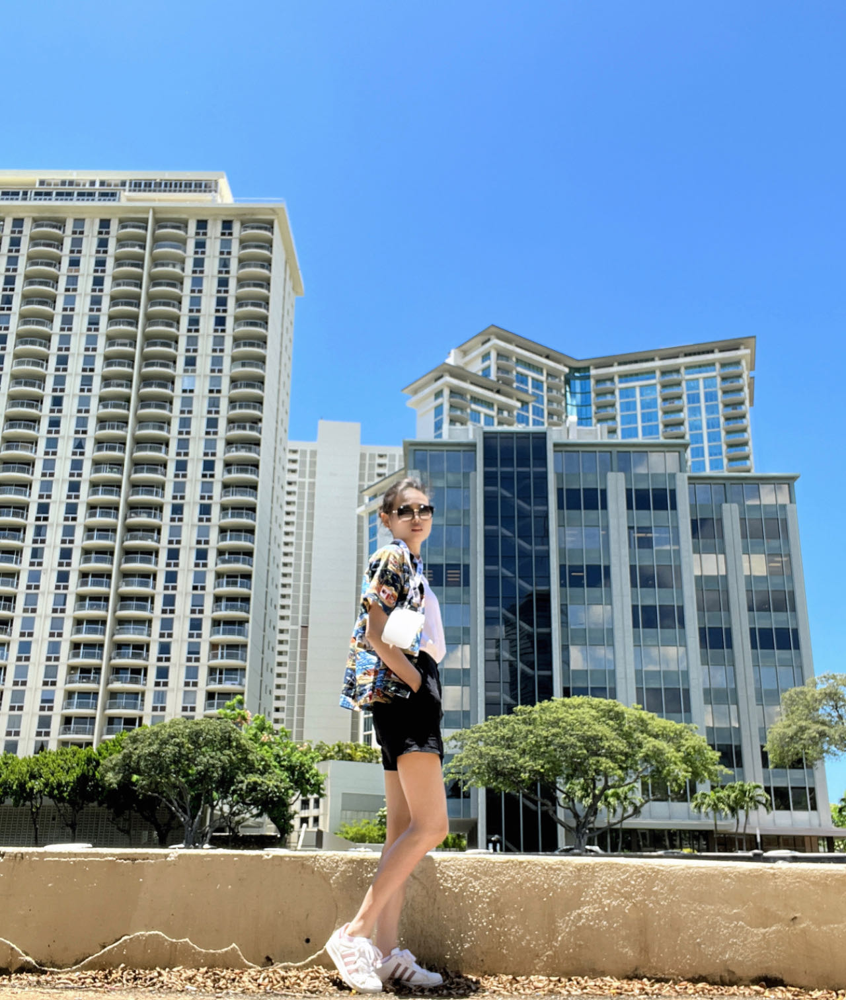

|  |
Qianru Zhang (张倩茹) |
I am a forth-year Ph.D student at the University of Hong Kong (HKU), majoring in Computer Science. Previously, I obtained master degree at the University of Hong Kong (HKU).
My research focuses on optimizing graph-based models, including GCNs, contrastive learning, transformers, diffusion models, reinforcement learning, and LLMs. By exploring underlying principles and mathematical frameworks, I develop innovative algorithms that effectively leverage the structural properties of graph/image data. This approach enhances accuracy, scalability, and interpretability. For example, I advance our understanding of graph algorithms in spatial-temporal graphs, recommendation systems, and bioinformatics.
Spatial-Temporal graphs
Recommendation Systems
AI for Physical/Biology Science
STEM: Unleashing the Power of Embeddings for Multi-task Recommendation.
Liangcai Su*, Junwei Pan*, Ximei Wang, Xi Xiao, Shijie Quan, Xihua Chen, Jie Jiang.
AAAI 2024. [Arxiv] [Code]
Beyond Two-Tower Matching: Learning Sparse Retrievable Interaction Models for Recommendation.
Liangcai Su, Fan Yan, Jieming Zhu, Xi Xiao, Haoyi Duan, Zhou Zhao, Zhenhua Dong and Ruiming Tang.
SIGIR 2023. [Paper]
Multi-interest Learning for Multi-modal Paper Recommendation.
Xiaoteng Shen*, Liangcai Su*, Xi Xiao, Yi Li
ICASSP 2024. To appear.
FinalMLP: An Enhanced Two-Stream MLP Model for CTR Prediction.
Kelong Mao, Jieming Zhu, Liangcai Su, Guohao Cai, Yuru Li, Zhenhua Dong.
AAAI 2023. [Paper] [Code]
BARS: Towards Open Benchmarking for Recommender Systems.
Jieming Zhu, Quanyu Dai, Liangcai Su, Rong Ma, Jinyang Liu, Guohao Cai, Xi Xiao, Rui Zhang.
SIGIR 2022. [Paper] [Code] [Project]
PEAR: Personalized Re-ranking with Contextualized Transformer for Recommendation
Yi Li, Jieming Zhu, Weiwen Liu, Liangcai Su, Guohao Cai, Qi Zhang, Ruiming Tang, Xi Xiao, Xiuqiang He.
WWW 2022. [Paper]